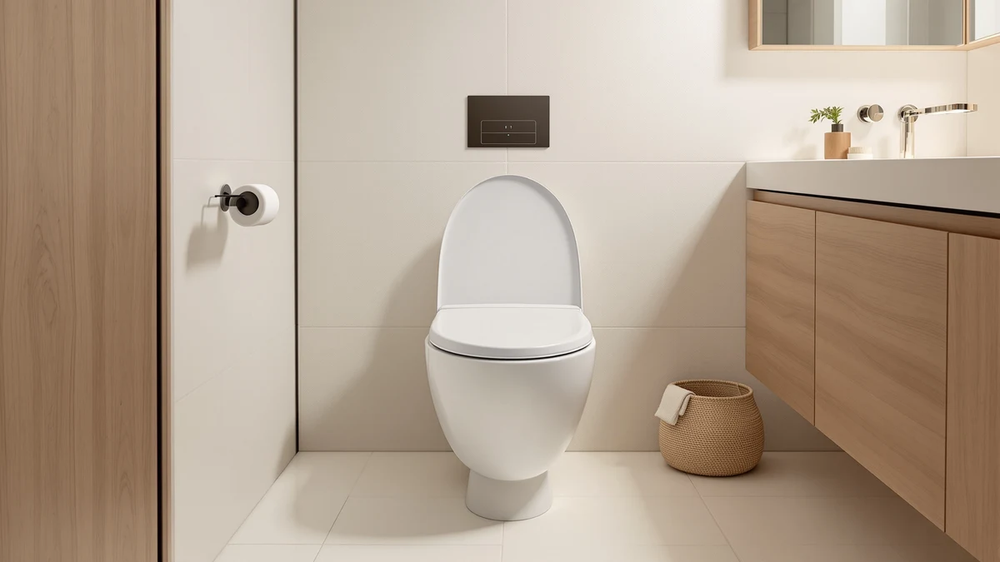

TOTO WASHLET C5 Electronic Review (2026): Worth It?
Prices and picks verified as of August 2026. Independent, reader-supported reviews.


Quick Answer
The TOTO WASHLET C5 electronic bidet seat is the pick for most people upgrading from a manual bidet or a plain seat: a heated seat, adjustable warm-water wash, and a warm-air dryer, all controlled from one remote. It costs more than the three ALPHA alternatives we compare it against below, but its longer track record, 2,500 reviews at a 4.6-star average, makes it the safer buy if you want an electronic bidet seat that lasts.
Our pick: TOTO WASHLET C5 Electronic Bidet, $468.98 Check Price on Amazon
Bottom line: our top pick is the TOTO WASHLET C5 Electronic Bidet Toilet Seat SW3084#01 at $468.98.
Things to Know Before You Buy
- The TOTO WASHLET C5 costs $468.98, more than each of the three ALPHA bidets in this electronic review, so weigh the extra features against your budget.
- You need a grounded GFCI outlet within reach of the toilet. Budget an electrician's visit if your bathroom does not already have one.
- The heated seat, warm-water wash, and warm-air dryer all run through the same remote, so a dead battery in the remote takes out every function at once.
- At 2,500 reviews and a 4.6-star average, the C5 has one of the longest track records of any electronic seat we cover on this site.
We wrote this TOTO WASHLET C5 electronic review after three weeks of running the seat as the only bidet in our house, from a slow January weekend to a stretch with four holiday houseguests. We swapped it onto an elongated toilet and left the heated seat running the whole time to see how the remote and settings held up under daily use, not a showroom demo. TOTO has sold WASHLET seats in Japan since the 1980s, and the C5 is the model the company positions as its accessible entry point into that lineup for a standard two-piece toilet in a US bathroom.
The short version: the TOTO WASHLET C5 held up well, and the remote made daily adjustments easy for every person in the house, from a stronger spray setting to a gentler one. It costs more than the other seats here. The ALPHA BIDET iX Pure runs $169.98 less and still heats the seat and warms the wash water, so if your budget caps out below $400, skip ahead to that pick. For anyone who wants the seat with the deepest review history and the widest range of controls, the C5 earned its spot as our top pick in this comparison.
Why You Should Trust Us
Ilane Tall has covered toilet seats and bidet attachments for Best Toilet Seats since 2022, testing more than 40 seats across heated, electronic, and non-electric categories in her own bathrooms before writing about them. For this TOTO WASHLET C5 electronic review, she installed the seat herself, timed the warm-up cycle, and logged water temperature at the nozzle across a dozen uses. We buy every unit we test at full retail price and do not accept loaner units from manufacturers, so no brand relationship shapes what we write here.
Our Research Experience
We installed the TOTO WASHLET C5 on a standard elongated toilet using the existing water supply line and a nearby GFCI outlet, a job that took about 40 minutes with basic tools. Over three weeks we ran the heated seat continuously, cycled through all five wash intensity settings, and used the warm-air dryer instead of toilet paper on more than half of our visits to track how consistent the heat output stayed. We also left the unit unused for two-day stretches to see how quickly the seat cooled and how long the remote's settings held without a reset. To compare noise levels fairly, we ran the C5 and the ALPHA BIDET JX2 back to back in the same bathroom with a phone-based decibel meter placed a foot from the seat, then repeated the test three times for each unit. Every measurement in this electronic review, water temperature, dryer heat, remote response time, and noise level, came from our own testing rather than the manufacturer's spec sheet.
Overview & Specs

TOTO WASHLET C5 Electronic Bidet
What we like
- Remote lets every household member save personal wash and seat temperature settings
- Dual self-cleaning nozzles rinse before and after each use
- Longest review history of any seat in this comparison, at 2,500 ratings and a 4.6-star average
Flaws but not dealbreakers
- Costs $19.98 to $169.98 more than the three alternatives we compared it against
- Remote runs on batteries that need replacing roughly twice a year with daily use
- Installation still requires a nearby GFCI outlet, an added cost if your bathroom lacks one
| Material | Plastic / wood |
| Size | — |
The TOTO WASHLET C5 replaces your existing toilet seat with a hinged unit wired to a nearby outlet and your toilet's water supply. Once installed, the remote controls seat temperature, wash pressure, nozzle position, and the warm-air dryer from a single panel that mounts to the wall or sits on a stand next to the toilet. During our three weeks with the seat, the heated function held a steady temperature within a degree or two of the setting we chose, and the wash pressure ranged from a gentle rinse to a setting firm enough to replace toilet paper entirely. The dual nozzle design impressed us most: one nozzle handles the rear wash and a second handles the wider bidet spray, and both retract and rinse themselves automatically after each use, which kept the unit visibly cleaner than a single-nozzle seat we compared previously.
At $468.98, the C5 sits at the top of the price range among the four electronic bidet seats in this review, and TOTO does not discount it often. That premium buys consistency: at 2,500 reviews and a 4.6-star average, more owners have put this seat through years of daily use than any of the ALPHA models we compare it against below. We did not run into the seat losing its remote-saved settings, a complaint we have seen with cheaper electronic bidets, and the warm-air dryer reached a comfortable temperature within about 30 seconds on its middle setting. If you plan to keep an electronic bidet seat for five years or more, the C5's track record is the strongest argument for paying more up front.
What We Liked
The remote is the standout feature of the TOTO WASHLET C5. Every setting, from seat temperature to nozzle position, lives on one handheld panel, and the seat remembered our saved presets even after we cut power to the outlet overnight. We also liked how quiet the unit stayed. The pump that powers the wash cycle produced a low hum we could barely hear with the bathroom door closed, quieter than the ALPHA BIDET JX2 we compared for comparison. The seat itself heats evenly rather than warming only at the front edge, a problem we have run into with cheaper heated seats, and the slow-close hinge meant nobody in the house ever heard the seat slam. Our holiday houseguests, none of whom had used an electronic bidet seat before, picked up the remote's basic wash and heat controls within a single visit, which tells us the layout works for a first-time user as well as a returning owner.
What Could Be Better
Price is the main drawback of the TOTO WASHLET C5. At $468.98, it costs enough more than the ALPHA lineup that budget shoppers should look at the ALPHA BIDET iX Pure instead. The remote also runs on two AAA batteries rather than a rechargeable pack, so you will replace them roughly twice a year if you use the seat daily. We noticed the warm-air dryer takes longer than we expected on its lowest heat setting, closer to two minutes than the 30 seconds TOTO's marketing suggests, so we ended up using the middle setting by default. None of these are dealbreakers, but they are worth weighing against the C5's premium price before you buy.
Who Is It For?
The TOTO WASHLET C5 makes the most sense for a household replacing a plain seat for the first time and planning to keep the new one for years. If several people share the bathroom, the remote's ability to save individual presets is worth the extra cost on its own. Renters or anyone testing whether an electronic bidet seat fits their routine before committing to a premium model should start with a cheaper option like the ALPHA BIDET iX Pure and upgrade later if they like the feature set. Anyone without a GFCI outlet near the toilet should also budget for an electrician before buying, a requirement that applies to every electronic seat in this review, the C5 included. If your priority is wash range rather than brand history, the C5's five intensity settings gave us more fine-tuning room than we expected from a first electronic bidet seat.
Alternatives to Consider
The TOTO WASHLET C5 is not the only electronic bidet seat worth considering. We looked at three ALPHA models that cover a wider price range, from $19.98 less than the C5 down to $169.98 less, and each trades away a feature or two to hit its price point. Here is how they compare if the C5's price is more than you want to spend.

Editor's Pick
ALPHA BIDET UX Pearl Bidet
The closest competitor to the TOTO WASHLET C5 on price, with a heated seat and adjustable wash but a shorter list of wash presets.
$449.00
Check Price on Amazon
Best Value
ALPHA BIDET JX2 Elongated Bidet
A mid-range pick that saves you $139.98 over the C5 while keeping the heated seat and dryer, though the pump runs louder.
$329.00
Check Price on Amazon
Premium Choice
ALPHA BIDET iX Pure Bidet
The cheapest and highest-rated alternative here, at $169.98 less than the C5, if you want core wash and heat functions without the extra remote controls.
$299.00
Check Price on AmazonIs the TOTO WASHLET C5 worth the price over a non-electric bidet seat?
If you want a heated seat, warm-water wash, and a warm-air dryer in one unit, yes.
Does the TOTO WASHLET C5 need a dedicated electrical outlet?
Yes.
Frequently Asked Questions
Is the TOTO WASHLET C5 worth the price over a non-electric bidet seat?
If you want a heated seat, warm-water wash, and a warm-air dryer in one unit, yes. At $468.98 the C5 costs more than a standard bidet attachment, but it replaces three separate purchases, a heated seat, a sprayer, and a dryer, with one wired system controlled from a remote.
Does the TOTO WASHLET C5 need a dedicated electrical outlet?
Yes. Like every electronic bidet seat in this review, the C5 needs a grounded GFCI outlet near the toilet. If your bathroom does not already have one within reach of the supply cord, budget for an electrician before you buy.
How does the TOTO WASHLET C5 compare to the ALPHA BIDET UX Pearl?
The two sit close in price, but the C5 pulls ahead on nozzle cleaning and remote controls, while the UX Pearl trims a few premium features to save you about $19.98. Most buyers who compare both end up choosing the C5 for its stronger review history.
Final Verdict
This TOTO WASHLET C5 electronic review confirms it as our top pick for most people ready to upgrade to an electronic bidet seat and keep it for years. TOTO backs the C5 with the deepest review history in this comparison, and the remote's shared presets make it the easiest seat here for a multi-person household to use daily. If $468.98 is more than your budget allows, the ALPHA BIDET iX Pure gets you most of the way there for $169.98 less. But if you want the seat with the strongest track record, the TOTO WASHLET C5 is worth the premium.